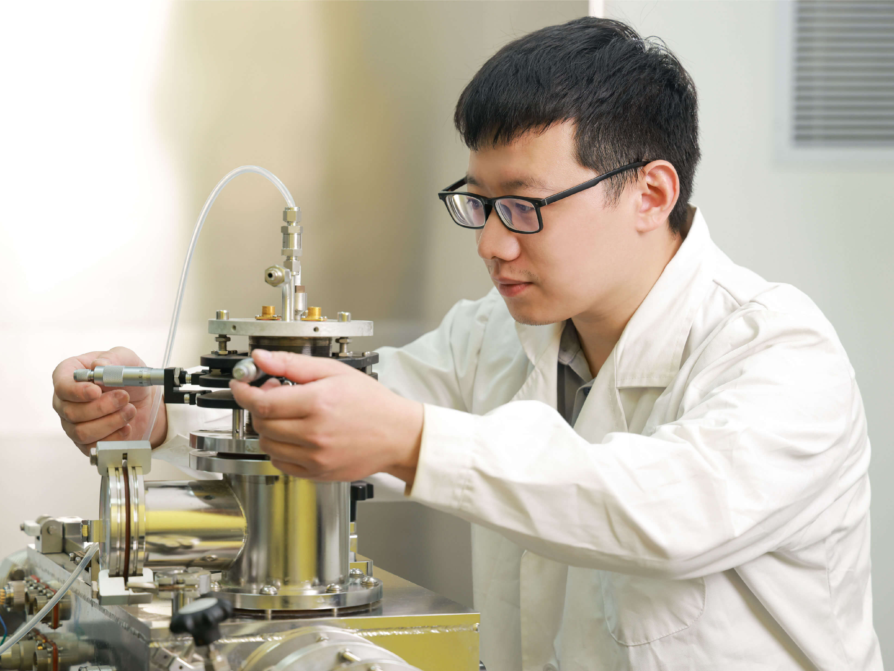

谢庆国
中国国籍，武汉光电国家实验室及华中科技大学博士生导师，武汉光电国家研究中心、华中科技大学教授，博士生导师，全数字PET发明人。专注于正电子发射断层成像（Positron Emission Tomography，简称PET）方法研究和仪器研制。2001年在华中科技大学创立数字PET实验室，历经理论创新、技术突破和系统创制的三个阶段，开辟了全数字PET这一新方向，完成了脉冲数字化方法、探测器技术、成像系统三个层面的创新，实现了从概念到系统、从原理到应用的跨越。
肖鹏
中国国籍，华中科技大学生命科学与技术学院教授，博士生导师。专注于正电子发射断层成像（PET）数据流处理和图像重建以及智能化适应性PET系统设计。提出基于列表模式数据的规则松弛有序子集算法（LMROS），解决了稀疏数据重建难题，在低计数率及截断数据条件下实现高质量图像重建。面向新兴实际应用，开发了一系列灵活开放的全数字PET成像系统，实现了针对多样化应用场景的高性能定制化和适应性成像。
Nicola D' Ascenzo
意大利国籍，华中科技大学生命科学与技术学院教授，博士生导师。专注于单光子检测芯片中的光子响应机制及信号处理方法以及新型正电子发射断层成像（PET）系统设计与成像技术研究（包括头盔式PET和农业用PET）。致力于全数字硅光电倍增管（SiPM）和便携式PET成像设备的研发。
万琳
中国国籍，华中科技大学软件学院教授，博士生导师。专注于建立Plug-n-Image技术体系以促进检测及成像系统的快速开发与创新应用。围绕该系统构建，探索标准化、模块化的核心操作方法以及从检测到成像的全计算流程接入机制，并采用人工智能（AI）方法进行医学影像特征提取和临床认知获取。

郑睿
中国国籍，博士
中国科学技术大学信息科学技术学院电子工程与信息科学系（6系）特任副研究员。
专注于单光子辐射探测的新材料及新方法研究。致力于开发性能卓越的新型闪烁发光机制和闪烁晶体材料。
李炳轩
中国国籍，博士
合肥综合性国家科学中心人工智能研究院副研究员
国家重点研发计划项目首席科学家，中国数字PET行业标准主要起草人之一。专注于新型PET成像系统设计和医学图像重建。
奚道明
中国国籍，博士
合肥综合性国家科学中心人工智能研究院副研究员
专注于光子计数X射线探测器的设计与成像系统的研制，提出了FPGA-only MVT digitizer技术方案并设计了相应的电路系统。